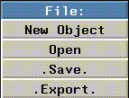

[N-World Contents] [Book Contents] [Prev] [Next] [Index]
File and Edit Menus
The File Menu
The GeoMenus>File menu lets you do all of the following tasks:
The GeoMenus>File menu looks like this:

Figure 2.1 The File menu
Each of the options on the File menu are described in the following sections.
New Object
The File>New Object command lets you create a new primitive in the N-Geometry window.
Figure 2.2 The Create menu
Use the New Object menu to add lights, polyhedra, and other types of primitives to your scene. Primitivies are the basic "building blocks" for creating more complex objects in N-Geometry.
Scaling Center
Creates a selectable, arbitrarily placed point in 3D space around which scaling operations can be performed.
When you scale an object in N-Geometry or N-Dynamics, you can specify that the scaling take place with respect to this point.
To add a scaling center:
1. (CLICK-L) on GeoMenus>New Object>Scaling Center.
- A list of methods for locating the center is displayed:
Figure 2.3 Methods for positioning a scaling center
2. (CLICK-L) on Cursor.
- You can use any of the methods listed on the menu for locating a scaling center. These methods are described in "Operations That Need an Origin," on page 1-45.
3. (CLICK-L) on the N-Geometry window where you want the cursor to be.
Figure 2.4 A scaling center
- The scaling center appears as a single point in the N-Geometry window. You use a scaling center in scaling operations that take place around a certain point.
4. (CLICK-L) on bodies on the element sensitivty menu, then (SHIFT-L) on the cube.
5. (CLICK-M) on Scale.
6. (CLICK-L) on the scaling center.
- Move the mouse left and right to scale the object with respect to the scaling center.
Figure 2.5 Cube scaled up and down using scaling center
- Note. Scaling centers can be restructured under an object using the GeoMenus>Utilities>Restructure, or with the restructuring capabilities of the Browser. If you want to Scale an object around a point in an N-Dynamics script, you may want to restructure the scaling center under the object so that they share the same transformation matrix.
Rotation Axes
Creates a selectable, arbitrarily placed segment in 3D space around which rotation operations can be performed.
When you rotate an object in N-Geometry or N-Dynamics, you can specify that the rotation take place around this axis.
To add a rotation axis:
1. (CLICK-L) on GeoMenus>New Object>Rotation Axis.
- A list of methods for locating the axis is displayed:
Figure 2.6 Methods for positioning a scaling center
2. (CLICK-L) on Select Normal.
- You can use any of the methods listed on the menu for locating a rotation axis. These methods are described in "Operations That Need an Axis," on page 1-43.
3. (CLICK-L) on the vertex whose normal you want to be able to rotate the object around.
Figure 2.7 A scaling center
- The rotation axis appears as a short segment in the N-Geometry window.
Figure 2.8 Rotation axes are separate objects
- You use a rotation axis in scaling operations that take place around a specified axis.
4. (CLICK-L) on bodies on the element sensitivty menu, then (SHIFT-L) on the cube.
5. (CLICK-M) on Rotate.
6. (CLICK-L) on Select a Segment.
7. (CLICK-L) on the rotation axis.
- Move the mouse left and right to scale the object with respect to the scaling center.
Figure 2.9 Cube rotated around rotation axis
- Note. Rotation axes can be restructured under an object using the GeoMenus>Utilities>Restructure, or with the restructuring capabilities of the Browser. If you want to Rotate an object around an axis in an N-Dynamics script, you may want to restructure the rotation axis under the object so that they share the same transformation matrix.
Mapper
Mappers are geometric objects that are used to specify how two-dimensional maps are to be projected onto a three dimensional object or face part.
Mappers may be of three types:
Planar, cylindrical, and spherical mapper objects are represented in the N-Geometry window by icons. The lines of the mapper icon describe the location of the mapping image's edges in the projection.
- Note. There are other mapper types, including parametric, per face, and frozen mappers, which are expressed in more detail in the Attributes Editor Reference Guide and the Getting Started guide.
To define how points in the image correspond to points in the mapper, pairs of numbers called UV coordinates are used. The U coordinate expresses the distance in the image from left to right, with 0 indicating the left side and 1 indicating the right side. The V coordinate describes positions from top to bottom, with 0 for the top and 1 for the bottom.
Planar Mappers
In a planar mapper, points in the image are projected in parallel lines through space in the direction defined to be perpendicular to the mapper. This resembles how objects look when they are placed in the path of a slide projector beam.
Figure 2.10 shows a planar mapper with its UV coordinates labeled, and a planar mapper bounding an octahedron.
Figure 2.10 A planar mapper bounding an octahedron
Cylindrical Mappers
In a cylindrical mapper, the image is wrapped cylindrically around the object, with the left edge of the image meeting the right edge. The image thus appears to be "wrapped" around the object like the label of a can of soup, with the left edge of the image abutting the right edge.
- Note. For hints on creating a seamless texture map, see the N-Paint Tutorial.
Figure 2.11 shows a cylindrical mapper with its UV coordinates labeled, and a cylindrical mapper bounding an octahedron.
Figure 2.11 A cylindrical mapper bounding an octahedron
Spherical Mappers
In a spherical mapper, the UV coordinates are arranged like the longitude and latitude lines of a globe. The relationship between the image and the mapper is therefore like the relationship between a grid of horizontal and vertical lines and a set of longitude and latitude lines on a globe. The portions of the image near the top and bottom are compressed at the top and bottom of the spherical region. Figure 2.12 shows a spherical mapper with its UV coordinates labeled, and a spherical mapper bounding an octahedron.
Figure 2.12 A spherical mapper bounding a cube
When they are created, mappers are separate objects; they can be restructured into an object (so that one shares or inherits its transformation matrix from another). You can also freeze the relationship of the mapper's UVs to the object, as described in the section "Make Frozen Mapper," on page 4-57.
A dynamic mapper in N-Geometry can be animated in N-Dynamics just like other objects. With a dynamic planar mapper, for example, if the object's transformation is animated differently than that of the mapper, the mapped image will slide along the surface, like the surface of an object passing through the beam of a slide projector.
You can use dynamic mappers to simulate motion without ever moving the object; for example, you could project a map of a wheel onto the wheel of a car model, then rotate the map to create the illusion that the wheel was spinning.
Creating a Mapper
To create a mapper:
1. Create the object to which you want to attach the mapper.
2. (CLICK-L) on GeoMenus>New Object>Mapper.
- The following dialog box appears:
Figure 2.13 Creating a mapper
3. (CLICK-L) on the type of mapper you want to create.
4. (CLICK-L) on the Bounds Source text edit box.
- An object list appears. (CLICK-L) on the object with which you want to associate the mapper.
- Note that the name of the mapper changes to show the new type and object upon which the mapper is based.
- Note. You can specify either an object or a face part as the bounds source for a mapper. You can display any face parts for an object if you (CLICK-R) on an object in an object list.
Restructuring the Mapper
If you want to be able to animate both the object and its mapper together, you should restructure them into a new group with the Browser. Until you restructure them into a new group, you can't move both as a single object:
Figure 2.14 Object transformed separately from mapper
To restructure the object and mapper into a new object:
5. Open the Browser.
6. (CLICK-L) on the Geo button.
- The object and mapper are both top level objects to begin:

Figure 2.15 Object and mapper both top level objects
7. (CLICK-M) and drag the mapper node onto the object.
Figure 2.16 Restructuring a mapper and an object into a new group
- As you drag the mapper, its name is outlined in red; when the text is over the target object, the box around that object turns blue. Let up on the mouse and the following dialog box appears:
Figure 2.17 Confirm menu
8. (CLICK-L) on Yes.
- This restructures the two elements into a new group, whose structure should now look like this:
Figure 2.18 Mapper restructured into a new group
9. (SHIFT-L) on the Octahedron Group, then (CLICK-L) on Axis Move>X.
- Now, if you move the group, both the octahedron and the mapper move, since they are inferior objects of the group and inherit its transformation matrix.
Figure 2.19 Transforming a group containing an object and a mapper
- If you want to animate both an object and a mapper together (as you do in N-Dynamics), you'll want to restructure objects like this.
- Note. If you create and assign a mapper in the Browser, the superior group containing the object and the mapper is created automatically.
- Note. Creating mappers is discussed in more detail in the N-Geometry Tutorial, and using the Browser for tasks like restructuring is discussed in more detail in Getting Started.
Creating Lights
N-Geometry provides you with several types of lights for illuminating shaded or rendered objects:
These lights and their characteristics are described in more detail in the Attributes Editor User Guide.
Lights are treated as objects in N-Geometry. After generating a light object, you may modify it using one of two methods:
- Note. To select a light in N-Geometry, you must select points in the element sensitivity menu.
Initially, the view window contains a single default point light positioned at 100, 300, 150 (up and back) so that it illuminates all visible objects.
(CLICK-L) on File>New Object>light to bring up the menu that lets you specify the parameters for a new light:
Figure 2.20 Defining a new light
Each of these parameters is described in more detail below:
Table 2.1 Light parameters for lights in N-Geometry
|
Parameter
|
Light Type
|
Description
|
|---|
|
Name
|
Ambient
Point
Infinite
Spot
|
Specifies the name of the light object to be created from this menu.
|
|
Type
|
|
Selects the type of light to be created from this menu, as described above.
|
|
Reference Space
|
Point
Infinite
Spot
|
Global positions lights using the conventional global coordinate system. If you want to render a scene as if the lights were fixed in space, select this option.
Camera selects a coordinate system that is centered with and aligned to the camera's current view. Lights specified this way maintain a constant relationship to the camera, even if the camera moves. Camera space is left-handed (position z is forward). If you want to render a scene as if the lights were attached to the camera, select this option.
|
|
Brightness
|
Ambient
Point
Infinite
Spot
|
Specifies the intensity of a light. The practical range is from 0 (least) to 1 (greatest). The actual range is unlimited in both the positive and negative directions. This flexibility can be helpful when you are illuminating dark objects; further, you can create negative lights, which subtract light from a scene. Use great care when specifying values greater than 1. In some cases, intensity values in the renderer might overflow, creating anomalous colors.
|
|
Color
|
Ambient
Point
Infinite
Spot
|
Selects the color for the light using a palette.
Figure 2.21 Selecting colors from the palette
To change the values displayed on the palette, (CLICK-L) on the Edit button. For a complete description of setting light color, see the Attributes Editor User Guide.
|
|
Group
|
Ambient
Point
Infinite
Spot
|
Specifies the initial group in which the light is placed. Light groups are arbitrary, named collections of lights which are used by N-Render as an attribute (you typically select a light group to apply to an object or group of objects). Lights can belong to any number of groups. See the N-Render documentation for a description of lights and light groups and how they affect surface characteristics.
|
|
Location
|
Point
Spot
|
For a point light, specify the X, Y, and Z coordinates for the light.
For a spot light, set the X, Y, and Z coordinates for the eyepoint (the sharp end of the cone).
|
|
Aim Point
|
Spot
|
Sets the X, Y, and Z location for the spot light. The location and aim point values define the length of the light and its orientation.
|
|
Radius
|
Spot
|
Sets the radius (from aim point to the edge of the light) of a spot light.
|
|
Shadowing
|
Spot
|
Specifies whether or not the light should generate shadows.
|
|
Projecting
|
Spot
|
Lets you specify that the spot light is to project an image (much like a slide through a slide projector). The image to be projected is specified with the Parameters menu.
Note. You must have selected Render as your render domain (rather than GL Shade) for this option's effect to be visible.
|
|
Direction
|
Infinite lights
|
Specify the direction in which the infinite light is shining. If you (CLICK-L) on the text edit box, you can select the axis along which the light is aimed.
|
Creating Polyhedra
Tetrahedra, octahedra, icosahedra, dodecahedra, cubes, cylinders, spheres and torus with default settings can be created by a single left mouse click. The default values for each polyhedron are shown in the menus in this section.
To create one of these polyhedra with other than the default values, (CLICK-R) to bring up a menu. These parameters are described in the section "Parameter Descriptions for Menu-Generated Polyhedra," on page 2-21.
Both objects shown in Figure 2.22, for example, are cylinder primitives. The object on the left is the default cylinder; the object on the right was created using the cylinder menu (it has 3 faces around (rather than 36), and it has a wedge cut). Simply modifying the polyhedron default settings is an often overlooked method for creating interesting polyhedra.
Figure 2.22 Default cylinder; cylinder created with modified settings (four sides)
Each of the basic polyhedra are described below. As with all of N-Geometry, you'll learn best by trying to create the different shapes on your own.
Tetrahedron
Figure 2.23 Tetrahedron and menu
Octahedron
Figure 2.24 Octahedron and menu
Icosahedron
Figure 2.25 Icosahedron and menu
Dodecahedron
Figure 2.26 Dodecahedron and menu
Cube
Figure 2.27 Cube and menu
Cylinder
Figure 2.28 Cylinder and menu
Sphere
Figure 2.29 Sphere and menu
Torus
Figure 2.30 Torus and menu
Parameter Descriptions for Menu-Generated Polyhedra
The following menu items, which are ordered alphabetically, are specified for polyhedra that don't have to be encoded. Not all menu items pertain to all polyhedra.
Table 2.2 Parameters for generating polyhedra
|
Parameter
|
Used to Create
|
Description
|
|---|
|
Arc Sampling
|
Generated objects that
contain an arc
|
In degrees, the frequency to be used for sampling the arc. A higher number means fewer facets on the arc.
|
|
C-S init rot.
|
Contour solids
Tubes
Tube solids
|
The initial rotation from the home position of the object's cross section. This won't be apparent if you are using circular cross-sections; however, if you are using irregularly shaped cross-sections, its impact is more readily apparent.
|
|
Depth
|
Cube
|
Length of the created object along the Z axis.
|
|
Faces Around
|
Cylinder
|
Number of sides the generated cylinder will have.
|
|
Height
|
Cube
Cylinder
|
Length of the created object along the Y axis.
|
|
Main Radius
|
Torus
|
Distance from center of torus to outside of tube.
|
|
Major Axis
|
Cylinder
|
Specifies the global axis along which the cylinder is aligned. Possible values are the symbols X, Y, or Z, or a list representing a Cartesian vector.
|
|
n-Latitudes
|
Sphere
Torus
|
Number of faces between the poles of the sphere. (On a globe, latitude lines are those that run parallel to the equator.)
|
|
n-Longitudes
|
Sphere
Torus
|
Number of faces around the sphere or solid of rotation. (On a globe, time changes with difference in longitude.)
|
|
Origin
|
Cube
Cylinder
|
Location for the object's local origin. Pops up a menu to preset this location.
|
|
Pie-cut Poles
|
Cylinder
Sphere
|
Specifies whether the top and bottom of the object are to be single faces or are to be formed by connecting the side edges to a point at the pole (making the top appear as if it were cut like a pie). The default is No.
Figure 2.31 Left, default cylinder; right, cylinder with pie-shaped poles
|
|
Polar Axis
|
Sphere
Torus
|
The axis along which the center (pole) of the object is aligned. The default is the Y axis. (CLICK-L) on this field to select an axis from a menu.
Note. If you want an object with vertical axes, encode the contour top to bottom and specify y as the polar axis. If you want an object with a horizontal axis, encode the contour from right to left and specify x as the polar axis.
|
|
Radius
|
Cylinder
Dodecahedron Icosahedron
Octahedron Sphere
Tetrahedron Torus
|
Used with radially symmetrical bodies, specifies the distance from the center of the polyhedron to each of its vertices.
|
|
Ring?
|
Tubes
|
Connects the first and last sections. The default is No.
Note. Unless the path of the tube lies entirely in one plane, the faces of the last section will probably be twisted.
|
|
Sketch Axis
|
Any sketched object
|
Specifies the axis on the sketching screen around which the contour is assumed to rotate. N-Geometry provides a default axis that is based on the shape of your contour.
|
|
Sweep Angle
|
Cylinder
Solid of rotation
Sphere
Torus
|
Number of degrees with which the polyhedron is to be created. 360 degrees is a complete sphere. 180 degrees indicates one half of a sphere.
Figure 2.32 Left, sphere with 360 degree swept angle, and right, with 270 degree swept angle (with wedge cut)
|
|
Toroidal
|
Solids of rotation
|
Finishing treatment for the object. If the object is not toroidal, its top and bottom are finished with flat planes. If the object is toroidal, its top and bottom are connected and a "tunnel" is formed through the object:
Figure 2.33 Left, non-toroidal, right toroidal, solids of rotation (made from wire at right)
|
|
Tube Radius
|
Torus
|
Radius for tube of the torus.
|
|
Wedge-cut
|
Cylinder
Solid of rotation
Sphere
Torus
|
A swept angle of less than 360 degrees leaves the object with an open end.
The default treatment is to close the open end with a flat polygon joined at the "last" latitude lines.
When wedge-cut is enabled, a spine is created down the center of the object and two planes are created to connect the edges to the center, creating the wedge shape. When wedge-cut is selected, pie-cut poles are created (as described above).
Figure 2.34 Left, default 270-degree swept-cut cylinder; right, wedge-cut version (note automatically created pie-cut poles)
|
|
Width
|
Cube
|
Length of the object along the x axis.
|
(CLICK-L) on [Next] to continue...
[N-World Contents] [Book Contents] [Prev] [Next] [Index]
 Another fine product from Nichimen documentation!
Another fine product from Nichimen documentation!
Copyright © 1996, Nichimen Graphics Corporation. All rights
reserved.